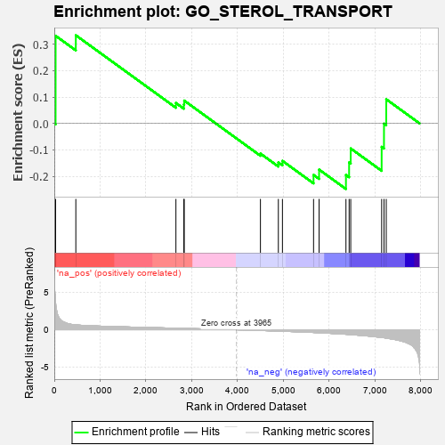
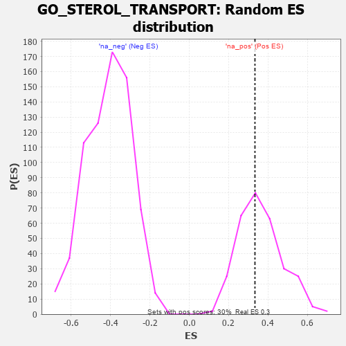

| | | Dataset | 7d |
| Phenotype | NoPhenotypeAvailable |
| Upregulated in class | na_pos |
| GeneSet | GO_STEROL_TRANSPORT |
| Enrichment Score (ES) | 0.33377382 |
| Normalized Enrichment Score (NES) | 0.9223222 |
| Nominal p-value | 0.56565654 |
| FDR q-value | 0.8127366 |
| FWER p-Value | 1.0 |
Table: GSEA Results Summary

Fig 1: Enrichment plot: GO_STEROL_TRANSPORT
Profile of the Running ES Score & Positions of GeneSet Members on the Rank Ordered List
| PROBE | GENE SYMBOL | GENE_TITLE | RANK IN GENE LIST | RANK METRIC SCORE | RUNNING ES | CORE ENRICHMENT | | 1 | ABCA5 | | | 29 | 3.799 | 0.3318 | Yes |
| 2 | LRP1 | | | 470 | 0.648 | 0.3338 | Yes |
| 3 | VPS4A | | | 2654 | 0.205 | 0.0775 | No |
| 4 | ARV1 | | | 2827 | 0.179 | 0.0717 | No |
| 5 | EEPD1 | | | 2835 | 0.178 | 0.0865 | No |
| 6 | NPC2 | | | 4498 | -0.093 | -0.1141 | No |
| 7 | CLU | | | 4889 | -0.174 | -0.1477 | No |
| 8 | OSBP2 | | | 4978 | -0.193 | -0.1417 | No |
| 9 | SOAT1 | | | 5657 | -0.363 | -0.1949 | No |
| 10 | ABCG1 | | | 5778 | -0.399 | -0.1747 | No |
| 11 | NPC1 | | | 6364 | -0.602 | -0.1951 | No |
| 12 | ABCA2 | | | 6433 | -0.634 | -0.1477 | No |
| 13 | LIPG | | | 6468 | -0.648 | -0.0947 | No |
| 14 | CFTR | | | 7143 | -1.030 | -0.0885 | No |
| 15 | TSPO | | | 7194 | -1.065 | -0.0008 | No |
| 16 | ABCA1 | | | 7243 | -1.113 | 0.0915 | No |
Table: GSEA details [plain text format]

Fig 2: GO_STEROL_TRANSPORT: Random ES distribution
Gene set null distribution of ES for GO_STEROL_TRANSPORT